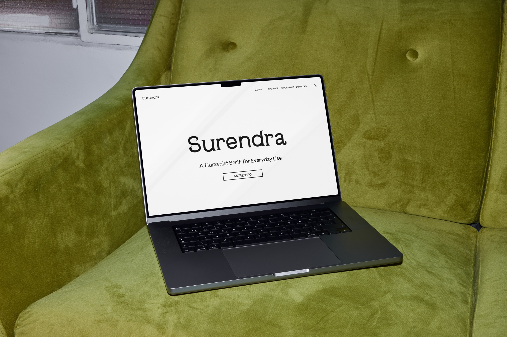
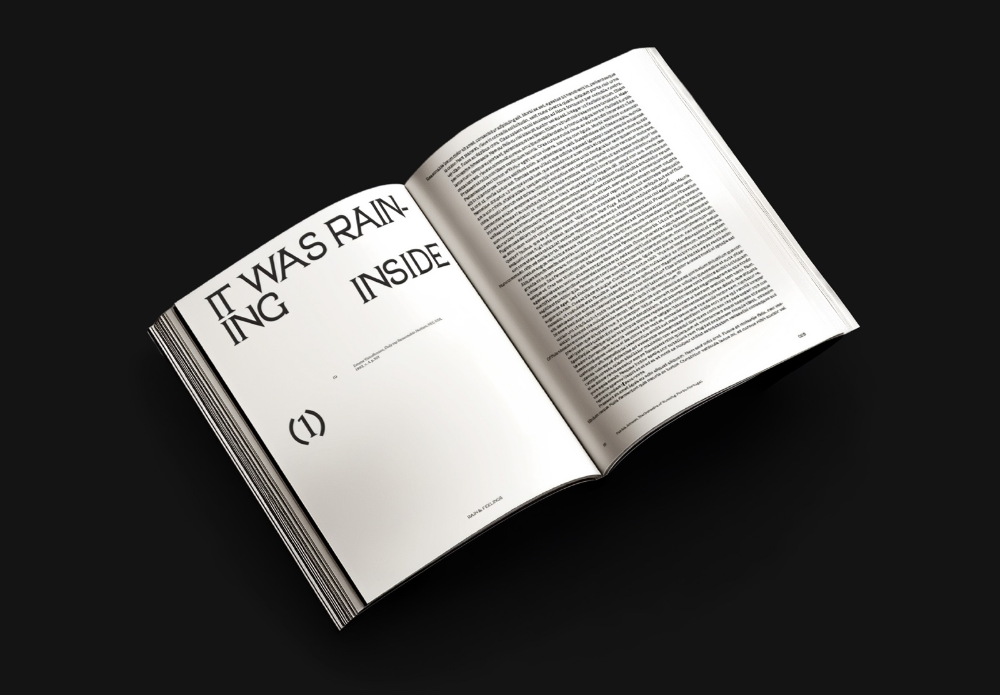
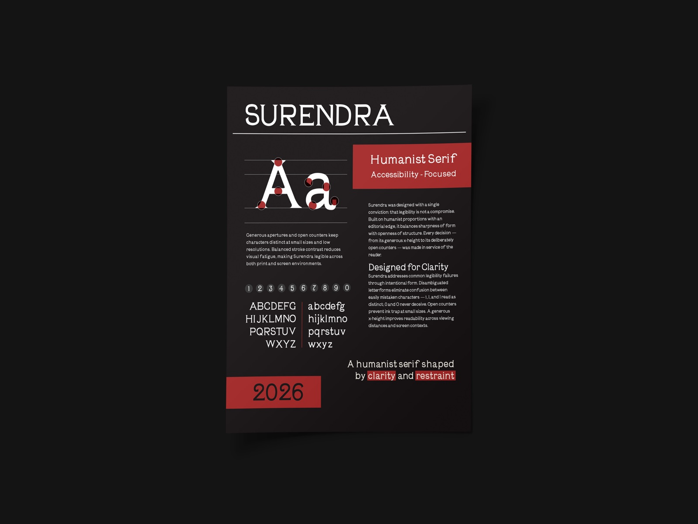

Case study · Typography · 2026
Custom Typeface + Specimen Poster
The goal of this project was to translate a historical metal or wood type specimen into a functional contemporary digital typeface.
Overview
Challenge
The challenge was to preserve the character and visual identity of the original reference while adapting it for modern use, with a strong focus on accessibility, readability, and consistency across a full character set.
Solution
I translated the character of historical wood and metal type into Surendra, a contemporary digital typeface with consistent stroke weight, open counters, and carefully balanced spacing.
Outcome
The completed glyph set and specimen poster demonstrate how a historically informed display face can retain expressive character while remaining functional and legible.
01 — Sketches
From historical specimen to digital type
I studied the original letterforms, traced their defining features, and refined the digital characters through repeated spacing and kerning checks. The goal was to preserve the source’s personality while making the full character set feel consistent.

03 — Mockups

